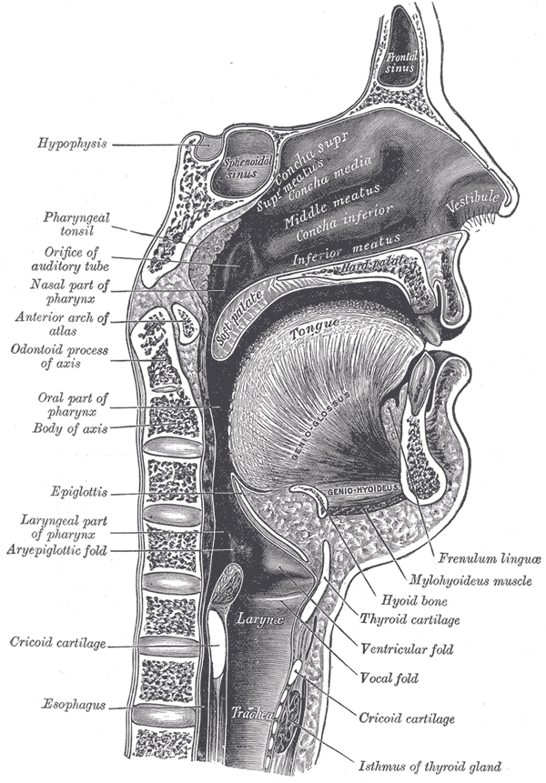

"The articulation of speech"
Speech
The act of producing speech is one of those activities we engage in virtually every day in hearing communities. It feels natural, and on the surface, it seems quite simple. On further inspection, however, it is remarkably complex and involves the coordination of a great number of body parts and mental processes. This post will focus on the articulatory process of speaking. (Note that I will not be attending much to the human mental processes here, as they seem to be largely irrelevant to the engineering of an accurate speech recognition model on computers.)
The physiological aspects of speech
Putting aside cognitive processes, speech begins in the lungs. The diaphgragm contracts to expel air from the lungs up into the vocal tract. At the beginning of the vocal tract is the larynx, containing the glottis, itself containing the vocal folds (which are casually referred to as vocal cords). The vocal folds open and close to modulate the flow of air through the vocal folds. This modulated air then makes its way up through the trachea, past the epiglottis and pharynx, and into the oral and nasal cavities. A diagram of the vocal tract may be seen in Figure 1.

Figure 1: Sagittal view of the mouth and vocal tract from Grey's Anatomy 1918 edition, as presented by the Wikipedia page on the vocal tract (Wikipedia contributors, 2018b). Image in the public domain.
From the time at which the air stream is in the glottis up until it leaves the body, movable organs may intervene and shape the air stream. These movements have different effects on the acoustic signal, which will be discussed in a subsequent section. Linguists (phoneticians in particular) and speech scientists have identified these organs that are involved in the articulation of speech, and we call them articulators. The movements of the articulators in the process of speaking is complex, and they move in a continuous (as opposed to discrete) fashion. In ultrasounds and MRIs of the oral cavity, the tongue can be seen darting from corner to corner of the mouth, taking on a variety of shapes and making contact with many different regions of the mouth. There are a handful of videos of MRI and ulstrasound imaging on the tongue on YouTube, such as this one. (The audio and video get slowed down considerably to show the articulations, at the cost of the audio becoming a bit creepy-sounding.)
In spite of the continuous nature of the orchestra of articulator movements, though, researchers have catalogued many attested common movement patterns, which are referred to as speech segments or phones. They are described in three dimensions: their voicing, their place of articulation, and their manner of articulation. In an articulatory sense, voicing refers to whether the vocal folds are vibrating while the segment is being articulated. The phone [z] at the start of the word zoo is voiced (as is the vowel component), and you can feel this if you place your hand on your throat while speaking the word. The place of articulation is, as the name suggests, the place in the vocal tract where a particular phone is realized. Using the example of [z] again, it is articulated with the tongue at the alveolar ridge, so we say it is an alveolar sound. The manner of articulation describes how a phone is realized. The phone [z] is realized as a fricative, meaning that there is a place of constriction and the air stream is fricated as it passes through the constriction. Together, these three dimensions describe the phone [z], which is referred to as a voiced alveolar fricative.
The International Phonetic Alphabet (International Phonetic Association, 1999), commonly referred to as the IPA, catalogs the phones that have been found across the world's languages. The Wikipedia page on the IPA (Wikipedia contributors, 2018a) is informative, and it has links to pages with recordings of most of the sounds. With this alphabet that relates to articulation, researchers who work with or reason about speech data (like speech scientists, linguists (especially phoneticians and phonologists), and speech pathologists) can create transcriptions of speech events that are much better at describing the actual speech event than orthographic representations.
To summarize this section on the articulation of speech, the speech process begins with forcing air from the lungs. This stream of air is shpaed on its way out of the body by movements of different speech organs called articulators. There are observable patterns ißn the movement of these articulators, which researchers refer to as speech segments or phones. And, phones are important because they provide a way of transcribing a speech event that is better related to the speech event than spelling is. If you are interested in reading more on articulation, the book Articulatory Phonetics (Gick, Wilson, & Derrick, 2013) should be a good choice.
The idea of these transcription tools is important for our purposes because they are used widely across speech recognition system as the targets to identify in the speech stream, which is possible because these articulations ultimately result in differences in the acoustic signal produced. The next section gives an overview of how speech produces an acoustic signal, which is ultimately the bassis of speech recognition.
Conclusion
By the end of this post, you should have a basic understanding of the general process of producing speech. We will be building on this understanding in the next post on the acoustics of speech.
References
Gick, B., Wilson, I., & Derrick, D. (2013). Articulatory phonetics. Malden: Wiley-Blackwell.
International Phonetic Association. (1999). Handbook of the International Phonetic Association: A guide to the use of the International Phonetic Alphabet. Cambridge: Cambridge University Press.
Wikipedia contributors. (2018a). International Phonetic Alphabet. In Wikipedia, the free encyclopedia. Retrieved May 26, 2018, from https://en.wikipedia.org/w/index.php?title=International_Phonetic_Alphabet&oldid=843077952.
Wikipedia contributors. (2018b). Vocal tract. In Wikipedia, the free encyclopedia. Retrieved May 26, 2018, from https://en.wikipedia.org/w/index.php?title=Vocal_tract&oldid=835170287.